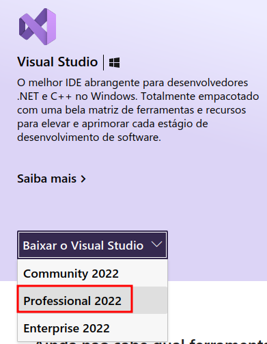

C# para Cobolistas
C# para CobolistasSetup do ambiente de desenvolvimento
Visual Studio
Para este curso, utilizaremos o Visual Studio Professional, disponível neste link.
Atenção
Assegure-se de fazer o download da versão Professional

Detalhes da instalação:
- ASP.NET e desenvolvimento Web
Após a instalação, entre em contato com sua coordenação e solicite a licença de uso do Visual Studio.
WSL2 - Windows Subsystem for Linux v2
Siga as orientações deste link e certifique-se de estar usando a versão 2 do WSL.
A distro padrão é Ubuntu, e se você ainda não tem experiência no mundo do pinguim, ela já vai atender todas as espectativas desse curso.
Docker
As dependências que utilizaremos serão mais fáceis de administrar se utilizarmos conteiners. O setup a seguir instalará o docker dentro da instância linux do WSL2. Tutorial original disponível nesse link.
Disponibilizei este script para facilitar a tarefa de configuração do docker.
Basta executar o comando abaixo no console bash do seu Ubuntu/WSL2 e acompanhar a execução:
curl https://raw.githubusercontent.com/guionardo/ambevtech-csharp/main/docs/00/setup.sh | sudo bash
SCRIPT
Instale os pré-requisitos:
sudo apt update && sudo apt upgrade
sudo apt remove docker docker-engine docker.io containerd runc
sudo apt-get install \ apt-transport-https \ ca-certificates \ curl \ gnupg \ lsb-release
Adicione o repositório do Docker na lista de sources do Ubuntu:
bash
curl -fsSL https://download.docker.com/linux/ubuntu/gpg | sudo gpg --dearmor -o /usr/share/keyrings/ docker-archive-keyring.gpg
echo \
"deb [arch=amd64 signed-by=/usr/share/keyrings/docker-archive-keyring.gpg] https://download.docker.com/linux/ ubuntu \
$(lsb_release -cs) stable" | sudo tee /etc/apt/sources.list.d/docker.list > /dev/null
Instale o Docker Engine
bash
sudo apt-get update
sudo apt-get install docker-ce docker-ce-cli containerd.io docker-compose-plugin
Dê permissão para rodar o Docker com seu usuário corrente:
bash
sudo usermod -aG docker $USER
Inicie o serviço do Docker:
bash
sudo service docker start
Este comando acima terá que ser executado toda vez que Linux for reiniciado. Se caso o serviço do Docker não estiver executando, mostrará esta mensagem de erro ao rodar comando docker:
Cannot connect to the Docker daemon at unix:///var/run/docker.sock. Is the docker daemon running?
O Docker Compose instalado agora estará na versão 2, para executa-lo em vez de docker-compose use docker compose.